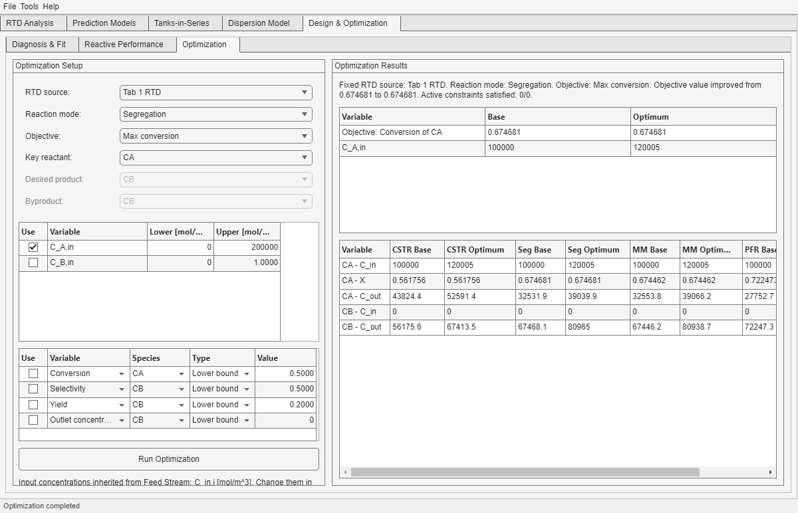

The current Optimization subtab keeps the selected RTD fixed and optimizes inlet concentrations only. It does not re-fit or mutate the hydrodynamics during the search.
What You Can Optimize

Representative optimization result with a fixed RTD, one active inlet concentration variable, and the resulting Base vs Optimum comparison.
Objective choices include conversion, selectivity, yield, and outlet-concentration targets.
The active decision variables are the inlet concentration rows C_i,in.
Input units are inherited from the loaded Feed Stream.
Control
Role in the current implementation
RTD source
Chooses whether Optimization uses the original RTD from Tab 1 or the fitted RTD from Diagnosis & Fit.
Reaction mode
Selects whether candidates are evaluated with Segregation or Maximum Mixedness during the search.
Objective
Defines which reactive metric is being improved.
Decision table
Defines which inlet concentrations can move and what bounds they must respect.
Constraint table
Adds lower or upper bounds on conversion, selectivity, yield, or outlet concentration.
Scope reminder: this is process-side optimization under a fixed hydrodynamic description. If the RTD itself is questionable, fix that upstream first rather than asking Optimization to compensate for it.
The first table compares Base versus Optimum for the objective, active variables, and active constraints.
The wide comparison table shows how the inlet change affects all four reactor models.
Product-species conversions are intentionally not shown where conversion is not meaningful.
Question
Where to look
What did the optimizer actually change?
The Base vs Optimum table, especially the active decision-variable rows.
Did the main target really improve?
The objective row in the Base vs Optimum table.
Does the result remain attractive across reactor viewpoints?
The wide four-model table.
Did constraints stay meaningful in engineering terms?
The active constraint rows plus the full model table.
Read both tables together: the first table says what the optimizer changed and why it looks attractive, while the wide model table says whether that change remains attractive across the four reactor viewpoints.
Important interpretation note: the current route is designed as a practical screening tool. Treat the numerical optimum as a decision-support result that still depends on RTD quality, chemistry quality, and sensible bounds.
Typical Mistakes
Using bounds that are mathematically valid but physically meaningless.
Optimizing before checking in Reactive Performance whether the selected RTD source and chemistry already behave sensibly.
Reading the optimum as "the answer" instead of as a candidate scenario that still needs engineering judgment.